1. Block & Kurbeltrieb
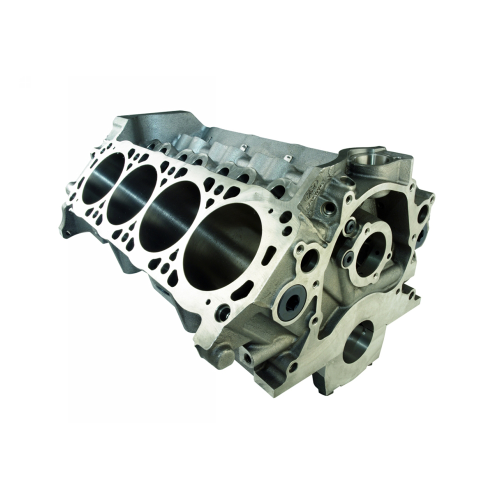
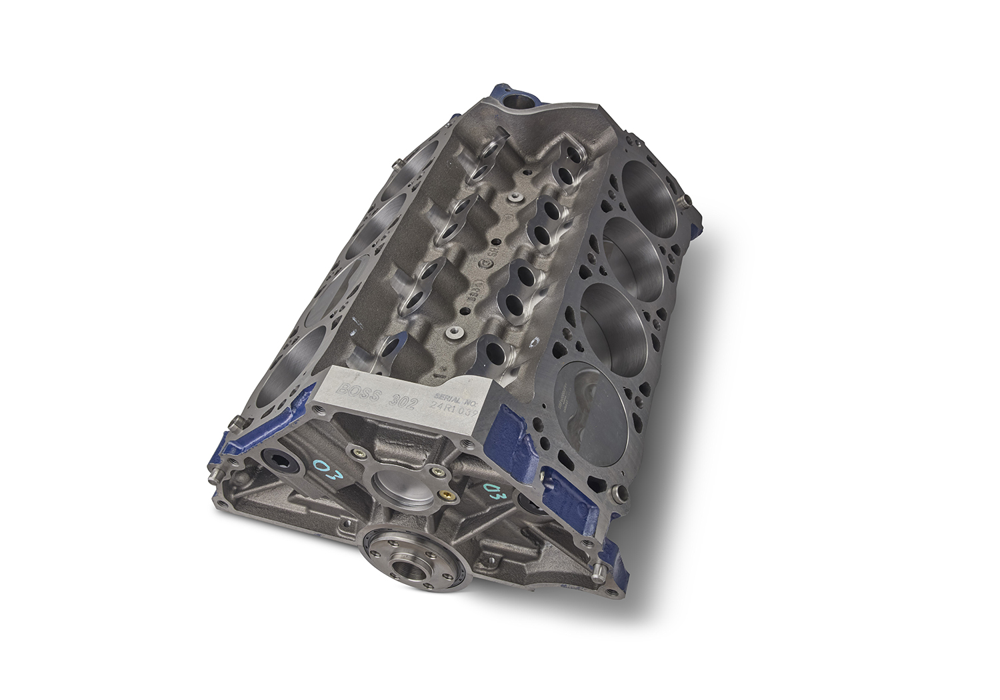
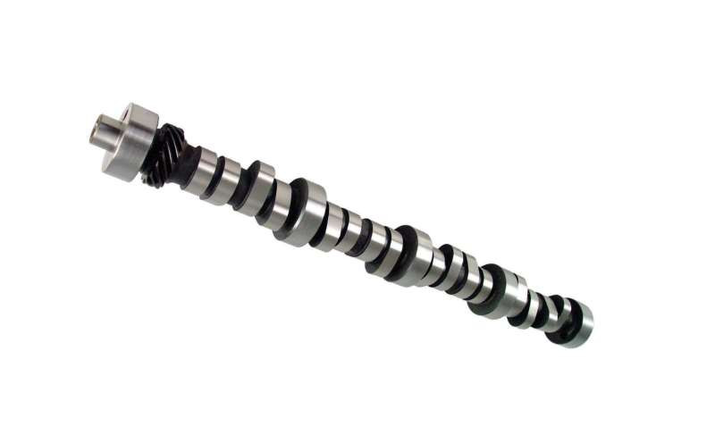
2. Kolben & Pleuel
3. Zylinderköpfe, Quench & Ventilfreiraum
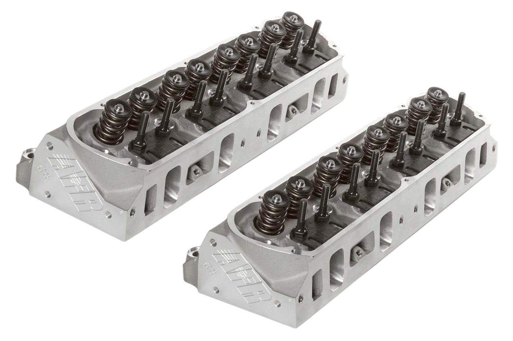
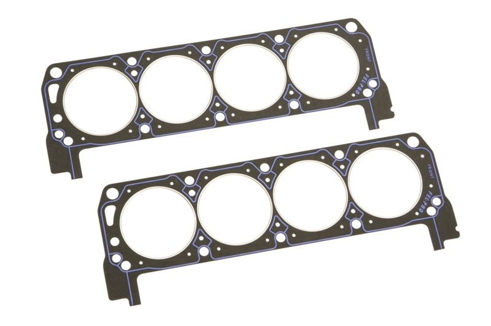
| Zyl. | Kolbenunterstand (A) | Dichtungsdicke (B) | Quench (A+B) | Kolben-Ventil Einlass (≥0.080") |
Kolben-Ventil Auslass (≥0.100") |
|---|
4. Ventiltrieb (Valvetrain)
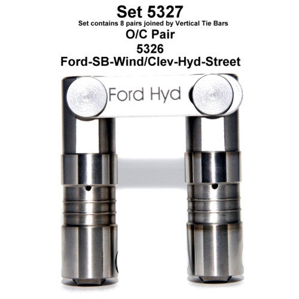
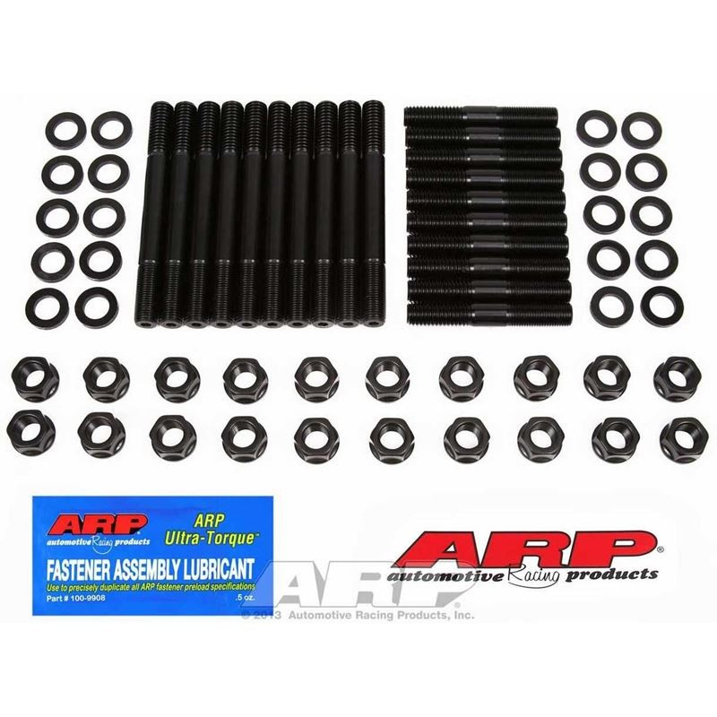
5. Ansaugspinne (Intake Manifold)
6. Zündkerzen (Spark Plugs)
7. Ölsystem (Oiling System)
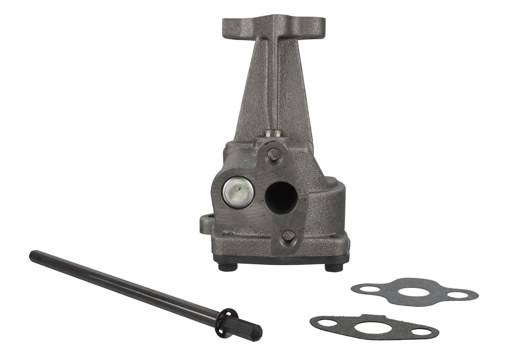
| Ford Performance Vorgabe | Unser Build | Status |
|---|---|---|
| Priming vor Erststart – Pflicht! | Melling PT11 Priming Tool + Anleitung | ✔ |
| Ölwanne min. 7 qt Kapazität | Wanne noch zu spezifizieren | ⚠ Prüfen |
| 4-Richtungen-Schwallbleche (Road Race) | Wanne mit Baffles wählen | ⚠ Prüfen |
| Windage Tray | Empfohlen, für Track Pflicht | ⚠ Bestellen |
| Pickup-Abstand .250"–.375" vom Boden | Messfeld vorhanden, Anleitung vorhanden | ✔ |
| Pickup-Sieb: Wire Mesh, nicht perforiertes Blech | Hinweis eingearbeitet | ✔ |
| Ölkühler: Ausreichend dimensioniert, keine Restriktionen | Kostenneutral (vorhanden) | ✔ |
| Ölleitungen: Ausreichend groß, wenig Bögen | Prüfen bei Montage | ⚠ Prüfen |
| Nie gebrauchten Ölkühler wiederverwenden! | – | ⚠ Prüfen |
| Durchflussrichtung beachten (One-Way-Systeme) | Bei Montage prüfen | ⚠ Prüfen |
8. Timing Cover & Harmonic Balancer
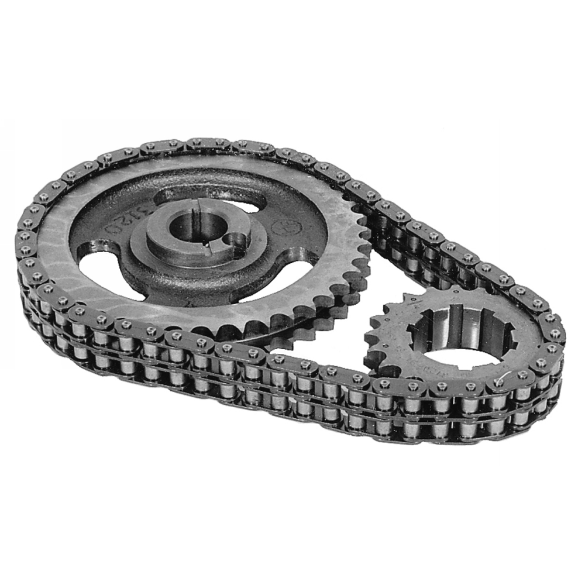
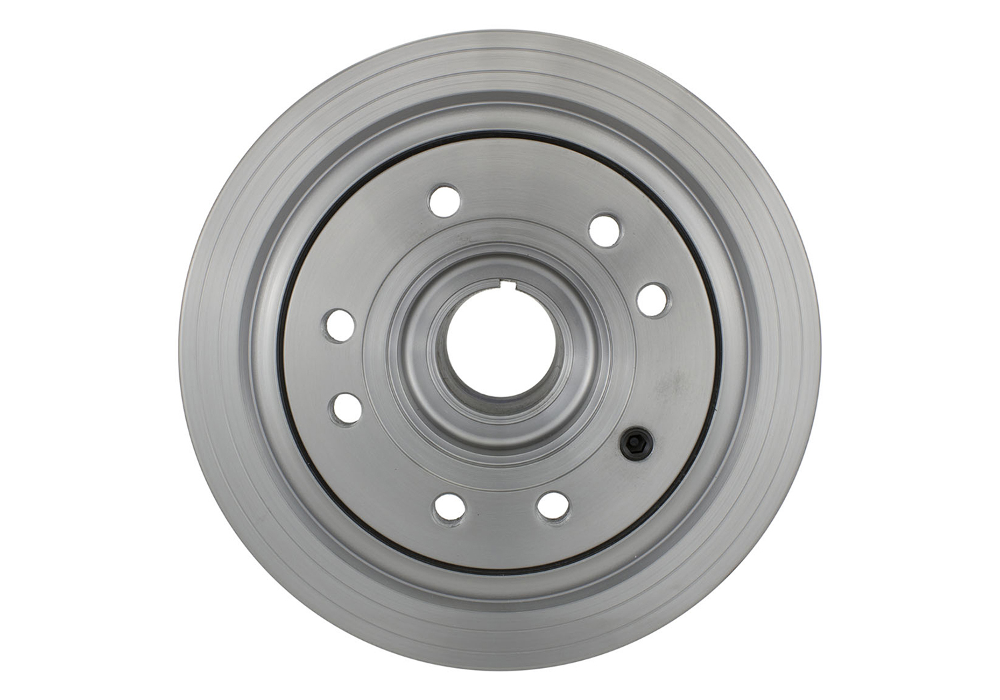
| Ford Performance Vorgabe | Unser Build | Status |
|---|---|---|
| Höhere Leistung = mehr Kühlkapazität | Milodon 16230 High-Volume Wasserpumpe | ✔ |
| Befüllpunkt = höchster Punkt! Sonst Lufttaschen → Hot Spots → Motorschaden | GT40: Prüfen! Kühler oft tief | ❌ Prüfen |
| Riemenscheiben: Richtige Größe (Underdrive = zu wenig Durchfluss) | Serien-Ratio oder leichtes Overdrive | ⚠ Prüfen |
| Kühlerfläche ausreichend für Motorleistung | Kühler-Dimensionierung prüfen | ⚠ Prüfen |
| Lüfter + Shroud: Luftdurchsatz ausreichend | Shroud erhöht Effektivität massiv | ⚠ Prüfen |
| Kühler-Position: Luftstrom bei verschiedenen Geschwindigkeiten | GT40: Heck-Kühler, Luftführung prüfen | ⚠ Prüfen |
9. Wasserpumpe (Water Pump)
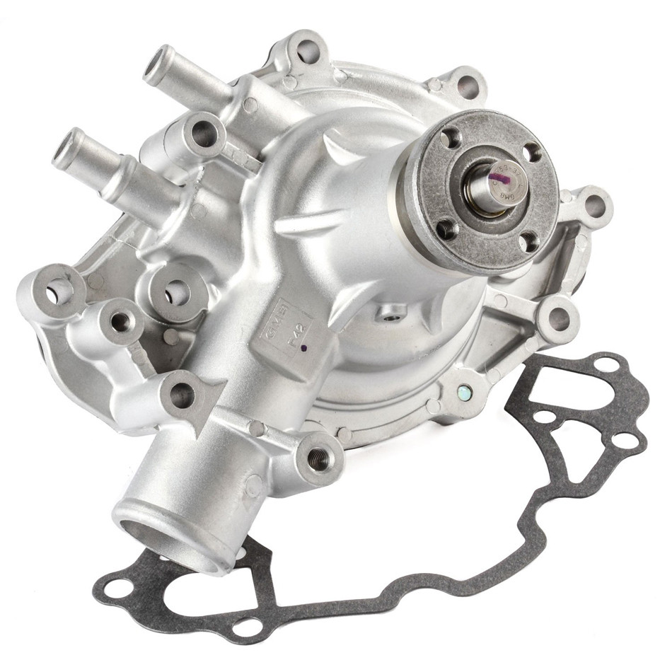
10. Vergaser & Kraftstoffsystem (Carburetor)
Die vier Vergaser stammen samt Ansaugbrücke, Gestänge und Ansaugtrichtern vom alten 1968er Small Block Ford 302 dieses Fahrzeugs. Sie wurden dort in England professionell mit zwei Lambdasonden abgestimmt und liefen im Trackbetrieb einwandfrei: guter Kaltstart, sauberer Leerlauf, saubere Gasannahme, stabiler Warmbetrieb. Betriebskraftstoff war historisch 98–100 ROZ.
Seitdem wurde nichts an Bedüsung oder Einstellschrauben verändert – nur gereinigt und neue Fußdichtungen verbaut. Die verbaute Bestückung ist damit kein unbekannter Zustand, sondern ein Ergebnis, und die bevorzugte Start-Baseline für den neuen M-6009-302.
Einordnung: Das Abstimmprotokoll ist nicht mehr vorhanden. Diese Angaben sind Owner-Historie, kein Herstellerfakt – belastbar als Begründung dafür, die vorhandene Abstimmung zunächst zu konservieren, nicht als technischer Sollwert.
Gehäusecodes je Vergaser aufnehmen und fotografieren. Ohne diese Zuordnung lässt sich später nicht mehr sagen, welcher Befund zu welchem Vergaser gehört. Arbeitsschritt: Build Log, Phase 3, Kapitel 27.
| Kennzeichnung | Fundort | Status |
|---|---|---|
| 8010 2 | Drosselklappe | Passt zur DRLA-45-Familie. Teilvalidiert – erlaubt keine vollständige Variantenbestimmung. |
| R 6205 P | noch zuzuordnen | Offen. Bedeutung derzeit nicht belastbar aufgelöst – dokumentieren, nicht interpretieren. |
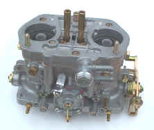
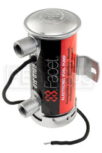
| Ford Performance Vorgabe | Unser Build | Status |
|---|---|---|
| Kraftstoffdruck bei Peak HP aufrechterhalten | 2x Facet Red Top + Druckregler | ✔ |
| Kraftstoffdruck Dell’Orto DRLA 45: Arbeitsbereich 2,5–3,5 psi Facet Red Top liefert 6–8 psi → Druckregler PFLICHT (Malpassi Filter King, je Kreis einer). Offen: Filter-King-Ausführung, Leitungsführung und Ist-Druck je Kreis – am Fahrzeug zu erfassen | Regler vorhanden, Ist-Druck offen | teilweise |
| Pumpe schwerkraftgespeist montieren (nicht saugend) | Facet: vertikal, tanknahe, Auslass oben | ✔ |
| Kraftstoff durch Filter drücken, nicht saugen | Filter nach Pumpe, vor Druckregler | ✔ |
| BSFC ~0.5 lb/HP für Dimensionierung | Eine Facet fördert bereits ~170 l/h; Bedarf bei Volllast ~120 l/h. Reserve reichlich – die Randbedingung ist der Druck, nicht die Menge. | ✔ |
| Tankbaffles vorhanden? | Prüfen (je 1 Pumpe pro Tank) | ⚠ Prüfen |
| Höhenlage, Temperatur & Kraftstoff beeinflussen Bedüsung | DellOrto: Jetting nach Streckenhöhe | ⚠ Tuning |
Ethanol: das Risiko liegt in der Standzeit, nicht in den Kilometern. Der Schadensmechanismus läuft über Wasseraufnahme und Säurebildung, und beides braucht Zeit im Stand:
• Quellung von Dichtungen, Membranen und Schwimmernadel-Ventilen
• Hygroskopisch: Ethanol bindet Wasser → Korrosion bei Standzeiten
• Lackschäden: Ethanol greift Lackoberflächen an (Spritzer beim Tanken!)
• Phasentrennung: Bei Standzeiten trennt sich Ethanol/Wasser vom Benzin → Motorschäden
| Tankkette | Produkt | ROZ | Ethanol | Empfehlung |
|---|---|---|---|---|
| Aral | Ultimate 102 | 102 | 0% | ★ BESTE WAHL |
| Shell | V-Power Racing | 100 | max 0,7% | ★ SEHR GUT |
| TotalEnergies | Excellium Super Plus | 98 | E5 (max 5%) | OK |
| Esso | Synergy Supreme+ Super Plus | 98 | E5 (max 5%) | OK |
| JET | Super Plus | 98 | E5 | OK (nicht überall) |
| Alle | Super E5 | 95 | E5 (max 5%) | Notfall |
| 95 | E10 (10%) | ❌ VERBOTEN |
| Tankkette | Produkt | ROZ | Ethanol | Empfehlung |
|---|---|---|---|---|
| MOL | EVO 100 / Master 100 | 100–101 | 0% (ETBE statt Ethanol) | ★ BESTE WAHL |
| Shell | V-Power | 100 | E5 | Sehr gut |
| OMV | MaxxMotion 100 | 100 | E5 | Sehr gut |
| MOL / Andere | Szüper 98 | 98 | E5 | OK |
| 95 | E10 | ❌ VERBOTEN |
| Tankkette | Produkt | ROZ | Ethanol | Empfehlung |
|---|---|---|---|---|
| MOL | EVO 100 | 100 | 0% (ETBE) | ★ BESTE WAHL |
| Shell | V-Power | 100 | E5 | Sehr gut |
| OMV | MaxxMotion 100 | 100 | E5 | Sehr gut |
| Alle | Natural 98 | 98 | E5 | OK |
| 95 | E10 | ❌ VERBOTEN |
| Tankkette | Produkt | ROZ | Ethanol | Empfehlung |
|---|---|---|---|---|
| Shell | V-Power Racing | 100 | E5 | ★ BESTE WAHL |
| MOL / Benzina | Verva 100 | 100 | E5 | Sehr gut |
| OMV | MaxxMotion 100 | 100 | E5 | Sehr gut |
| Alle | Natural 98 | 98 | E5 | OK |
| 95 | E10 | ❌ VERBOTEN |
| Tankkette | Produkt | ROZ | Ethanol | Empfehlung |
|---|---|---|---|---|
| TotalEnergies (am Circuit!) | Excellium SPA 102 | 102+ | E5 | ★ EXKLUSIV am Circuit! |
| Shell | V-Power Racing | 100 | E5 | Sehr gut |
| TotalEnergies | Excellium Super Plus | 98 | E5 | OK |
| Alle | SP98 (Super Plus) | 98 | E5 | OK |
| 95 | E10 | ❌ VERBOTEN |
| Tankkette | Produkt | ROZ | Ethanol | Empfehlung |
|---|---|---|---|---|
| OMV | MaxxMotion 100+ | 100 | E5 | ★ BESTE WAHL |
| Shell | V-Power Racing | 100 | E5 | Sehr gut |
| Alle | Super Plus | 98 | E5 | OK |
| Strecke | Tanken bei | Produkt | ROZ |
|---|---|---|---|
| Pannoniaring | MOL | EVO 100 (ethanol-frei!) | 100 |
| Slovakiaring | MOL / OMV | EVO 100 oder MaxxMotion 100 | 100 |
| Brno | Shell / MOL-Benzina | V-Power Racing / Verva 100 | 100 |
| Spa | TotalEnergies am Circuit | Excellium SPA 102 | 102+ |
11. Zündanlage (MSD Ignition)
Jede Komponente hat ein eigenes Drehzahl-Limit. Die niedrigste Grenze bestimmt die maximale Drehzahl des Motors – und damit die Rev-Limiter-Einstellung.
| Komponente | Max. RPM | Begründung |
|---|---|---|
| COMP Cams XE274HR | 6.200 | COMP Cams empf. Betriebsbereich 2.200–6.200 |
| Morel 5327 HLT Lifter | 6.500–7.000+ | HLT (Limited Travel) für High-RPM ausgelegt |
| AFR 8605 Ventilfedern | 7.000 | AFR Upgrade-Feder, .650" Lift / 7.000 RPM |
| AFR 8600 Ti-Retainer | 7.000+ | Titan = leichter als Stahl, reduziert Ventiltrieb-Trägheit |
| COMP 1632-16 Roller Rockers | 7.000+ | 8650 Chromoly, Nadellager, Ultra Pro Magnum |
| BOSS302 Block (4-Bolt) | 7.500+ | Race-Block, 4-Bolt Mains auf Pos. 2/3/4 |
| Geschmiedete Internals | 7.500+ | Kurbel, Pleuel, Kolben – alle geschmiedet |
| MSD 6AL Rev Limiter | einstellbar | 2.000–11.000 RPM in 100er-Schritten |
Empf. Rev-Limiter-Einstellung: 6.500 RPM (Sicherheitsmarge für Ventiltrieb)
Die Advance-Kurve bestimmt, wie schnell der Zündzeitpunkt von Initial auf Total steigt. Langsame Kurve = weniger Klopfneigung. MSD liefert 2x Heavy Silver (langsamste Kurve). Kombinationen:
| Kombination | Federn | Kurve |
|---|---|---|
| A (Werks) | 2× Heavy Silver | Langsamste |
| B | 1× Heavy Silver + 1× Light Blue | Mittel-langsam |
| C | 1× Heavy Silver + 1× Light Silver | Mittel |
| D | 2× Light Blue | Mittel-schnell |
| E | 1× Light Silver + 1× Light Blue | Schnell |
| F | 2× Light Silver | Schnellste |
Advance Stop Bushings begrenzen den mechanischen Verstellwinkel:
| Bushing-Farbe | Mech. Advance | Bei 12° Initial = Total |
|---|---|---|
| Silber (Werks) | 21° | 33° |
| Blau | 25° | 37° |
| Schwarz (kein) | 28° | 40° |
| Ford Performance Vorgabe | Unser Build | Status |
|---|---|---|
| Total Timing 5.0L (302): 36–38° | Empf. 32–36° (9.8:1 CR, konservativer) | ✔ |
| Vacuum Advance an Ported Vacuum (nicht Manifold!) | 8479 mit Unterdruckdose vorhanden – Abgriff an der DRLA-Anlage noch offen | teilweise |
| Zündkabel-Routing: Inductive Crossfire vermeiden | Dokumentiert (s.u.) | ✔ |
| Verteilerzahnrad: Material passend zur Nockenwelle | MSD 8479: Iron Gear für Hyd. Roller ✔ | ✔ |
| Falsche Höhe des Verteilerzahnrads vermeiden | MSD Werks-Einstellung, nicht verändert | ✔ |
COMP XE274HR = Teilenr. 35-518-8. Der „35“-Prefix bedeutet 351W/HO-Zuendfolge:
1 – 3 – 7 – 2 – 6 – 5 – 4 – 8
NICHT die Standard-302-Folge (1-5-4-2-6-3-7-8)!
Quelle: COMP Cams – Cams mit Prefix „31“ = Standard 302, Prefix „35“ = 351W/HO.
Verteilerkappe + Zündkabel müssen entsprechend verdrahtet werden.
Zylinderanordnung (Blick von vorne):
Beifahrerseite (RH): 1-2-3-4 | Fahrerseite (LH): 5-6-7-8
Verteiler dreht gegen den Uhrzeigersinn (CCW).
12. Anlasser (Starter Motor)
13. Nebenaggregate (Accessory Drive)
| Ford Performance Vorgabe | Unser Build | Status |
|---|---|---|
| Schwungrad muss zum Balance Factor passen! | M-6009-302 = Zero Balance → Zero-Balance Schwungrad Pflicht | ✔ Dokumentiert |
| Falsche Getriebewellenlänge kann Kurbelwelle nach vorn drücken → Axiallager-Schaden | UN1-13 Adapter prüfen | ⚠ Prüfen |
| Axiallager-Schaden passiert in Sekunden! | Axialspiel messen (Messfeld vorhanden) | ✔ |
14. Kupplung & Antrieb (Clutch)
- Altes Pilotlager mit Abzieher entfernen (Innenauszieher oder Brot-Methode bei Buchsen)
- Neues Lager prüfen: Nadelhülse (Needle Bearing) oder Bronze-Buchse
- Saubere Bohrung im Kurbelwellen-Flansch, ölfrei
- Neues Lager gerade eintreiben: Passende Nuss als Einpresswerkzeug, flache Seite nach außen
- Tiefe: Bündig oder leicht versenkt (Getriebe-Eingangswelle muss frei gleiten)
- ZERO BALANCE Pflicht! M-6009-302 = Neutral Balanced → Zero-Balance Schwungrad
- Auflageflasche auf Kurbelwelle reinigen (ölfrei, kein Fett!)
- Schwungrad auf Passstifte (Dowels) setzen
- Schrauben trocken einsetzen, kein Schmiermittel
- Drehmoment: 75–85 ft-lbs (102–115 Nm), sternförmig (kreuzweise)
- Reibfläche mit Bremsenreiniger entfetten
- Zahnkranz prüfen: Keine beschädigten Zähne, sonst Starterprobleme
- Reibflächen entfetten! Schwungrad UND Druckplatte mit Bremsenreiniger reinigen
- Kupplungsscheibe mit Zentrierdorn (Alignment Tool) in Pilotlager einführen
- Reibbelag-Seite: „Flywheel Side“ / Federseite zum Schwungrad
- Druckplatte aufsetzen, Dowel Pins (Ford M-6397-A302) zuerst!
- Schrauben gleichmäßig kreisförmig anziehen: je 1 Umdrehung nacheinander
- Drehmoment: 12–24 ft-lbs (16–33 Nm)
- Zentrierdorn erst NACH dem Anziehen entfernen – muss frei gleiten!
- Ausrücklager (Throw-Out Bearing) auf Hülse/Gabel pressen
- Freilauf prüfen: Lager muss leichtgängig drehen
- Gabel und Schwenkpunkt schmieren (Hochtemperaturfett)
15. Antriebsstrang (Drivetrain)
| Gang | 1. | 2. | 3. | 4. | 5. | R |
|---|---|---|---|---|---|---|
| Ratio | 3.36 | 2.05 | 1.38 | 1.03 | 0.82 | 3.54 |